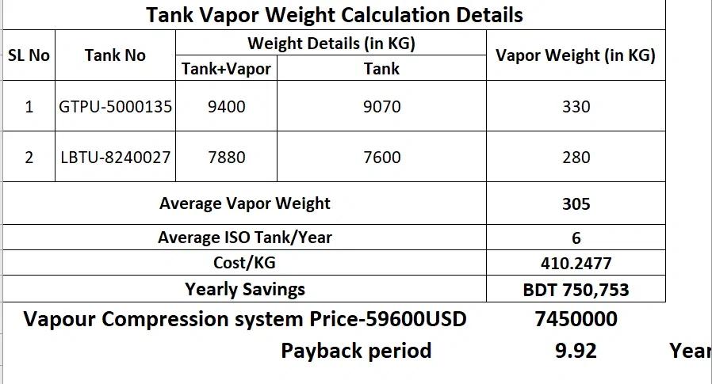
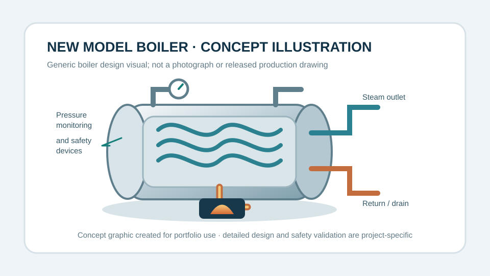

⌁
Industrial refrigerants
Responsible recovery feasibility and bulk vapor pressure management.
INDUSTRIAL ENERGY · REFRIGERANTS · THERMAL SYSTEMS
From boiler and steam distribution to refrigerant handling and test-system efficiency, I assess thermal processes using physical measurements, feasibility reasoning and industrial operating constraints.

Only this research track
These themes are selected specifically for this specialization.
Responsible recovery feasibility and bulk vapor pressure management.
Pressure vessels, inspection and steam-distribution design.
Measurement-led improvements in refrigerator cooling tests.
Evidence-led methods
Define mass and energy boundaries
Measure pressure, temperature and operating cycle time
Compare process alternatives and uncertainty
Evaluate feasibility before equipment adoption
Selected work
Only the projects that materially support this track are featured.
Feasibility only
Assessed residual refrigerant and proposed recovery options across bulk gas handling; vendor system was evaluated but not commissioned.
My involvement: Engineering feasibility and process analysis
Evidence: System evaluated, not implemented. Cost, payback and tank identifiers withheld from public portfolio.

Industrial case studyWorked with gas handling, vapor pressure and storage-side process considerations in refrigeration manufacturing.
My involvement: Process analysis
Evidence: Industrial evaluation and calculations; not an independently verified recovery outcome.

Industrial case studyWorked on fabrication/design of shell and fire-tube boilers, hydraulic testing, NDT, heat treatment and steam-piping layout.
My involvement: Engineering design and inspection support
Evidence: Professional project experience at New Model Boiler Company.
Future research
Under which operating conditions does refrigerant vapor recovery become technically and economically viable?
What measurement strategy best separates test-process energy use from product performance?
I welcome discussions with research groups whose work connects to Energy & Sustainable Thermal Systems.
Academic profile and contact ↗